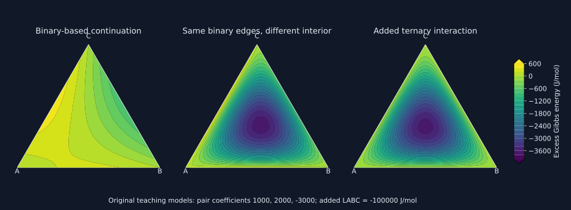

13. CALPHAD models, database consistency and constrained equilibrium
A thermodynamic database is an executable hypothesis about Gibbs energy. The equilibrium solver selects phase amounts and compositions under conservation constraints; it cannot supply missing physics or repair incompatible reference states. This chapter builds the path from unary functions to multicomponent models and then to an optimum with a checkable certificate.
1. Calculation and assessment solve different problems
CALPHAD expands to CALculation of PHAse Diagrams. The method represents the thermodynamic properties of competing phases with mutually compatible Gibbs energy functions. A database packages their parameters, model definitions, component identities, phase constituents, reference conventions and validity information in a machine-readable form. A TDB file is one such representation. A function name alone is not its physical definition: the phase, amount basis, temperature intervals and references must travel with it.
In a calculation, parameters are inputs and equilibrium is the output. At specified temperature, pressure and elemental amounts, the program finds the lowest permitted total Gibbs energy. In an assessment, measured phase boundaries, calorimetry, activities and other evidence constrain unknown model coefficients. The assessor chooses the model and estimates parameters, usually using several data types with uncertainty and consistency checks. These are nested inverse and forward problems, not interchangeable buttons.
A visually accurate phase boundary does not uniquely identify every coefficient. A heat-capacity measurement constrains a second temperature derivative, whereas an absolute enthalpy anchor and an entropy anchor constrain integration constants. Parameters that are weakly constrained by one experiment may matter strongly in an extrapolation. Recording the database version and evaluated parameter set is therefore part of a reproducible calculation, just as recording the solver conditions is.
Kattner’s NIST-hosted 1997 paper, in its model, coefficient-assessment and higher-component sections, explicitly connects thermochemical and equilibrium evidence with compatible phase descriptions. It also describes refining higher-component predictions with targeted experiments. The lesson’s distinction between using a database and constructing one is therefore scientifically consequential: a solver output is conditional on the assessed model.
2. Unary Gibbs functions are constrained by their derivatives
For a pure phase at fixed pressure, within a smooth single-phase branch,
\[dg=-s\,dT+v\,dp,\qquad s=-g_T,\qquad h=g+Ts=g-Tg_T,\qquad c_p=-Tg_{TT}.\]Subscripts denote partial derivatives with the other declared variables fixed. These identities do not assume constant enthalpy. Indeed, differentiating \(g=h-Ts\) at fixed pressure gives \(g_T=h_T-s-Ts_T\); the terms \(h_T=c_p\) and \(Ts_T=c_p\) cancel. Dropping \(h_T\) while retaining the entropy dependence would be inconsistent.
A commonly encountered algebraic family has the form
\[g(T)-H_{\rm ref}=a+bT+cT\ln(T/T_*)+\sum_{k\notin\{0,1\}}d_kT^k.\]The fixed temperature \(T_*\) makes the logarithm dimensionless. Tables often write \(\ln T\) with the kelvin convention implicit; changing the log scale shifts the coefficient of \(T\). Each coefficient has the units needed for its entire term to be an energy per mole. The integer powers can include negative powers. This is a representation over a declared range, not a universal law down to zero kelvin.
Term-by-term differentiation gives a useful audit table:
\[s=-b-c[\ln(T/T_*)+1]-\sum_k k d_kT^{k-1},\] \[h-H_{\rm ref}=a-cT+\sum_k(1-k)d_kT^k,\] \[c_p=-c-\sum_k k(k-1)d_kT^{k-1}.\]The constant \(a\) fixes an enthalpy offset and does not enter the entropy. The term \(bT\) changes entropy by \(-b\) but cancels from enthalpy and heat capacity. A fit to heat capacity alone can never determine either \(a\) or \(b\). Conversely, an attractive-looking Gibbs curve may have a negative or singular heat capacity after differentiation. For a locally stable ordinary bulk phase at fixed composition and pressure, positive heat capacity is an additional necessary condition; metastable continuation and fitted partial contributions require careful interpretation.
Our teaching function uses \(T_*=1000\) K and numerical coefficients \(a=-10000\), \(b=20\), \(c=-25\), \(d_2=-0.002\), \(d_{-1}=100000\), with the corresponding molar SI units. At 900 K it gives \(g=8861.722713\), \(s=6.089443899\), \(h=14342.222222\), and \(c_p=28.353086420\). The laboratory checks \(h=g+Ts\) directly. These values illustrate an internally consistent function; they are not property estimates for an element.
3. Reference enthalpies, temperature intervals and joins
The standard elemental reference convention uses the enthalpy of a specified stable elemental state at a specified reference temperature and pressure. The lecture describes the usual 298.15 K and 1 bar convention. One bar is \(10^5\) Pa; one standard atmosphere is 101325 Pa. A tabulated \(g-H_{\rm SER}\) subtracts a fixed reference enthalpy, not the temperature-dependent Gibbs energy of an arbitrarily selected phase. Its value need not vanish at the reference temperature because of the \(-Ts\) term.
Two phases of the same element must share this reference. Their difference then gives the phase lattice stability without an arbitrary independent offset. A database may store a phase function directly or as a reference-phase function plus a difference. Algebraically these are equivalent only when the full functions, not merely their constant coefficients, are combined.
For a multicomponent system, a common elemental reference change adds \(\sum_i x_i q_i(T,p)\) to every phase on the same basis. Summing over phases changes the total objective by \(\sum_i N_i q_i\), fixed by conservation. Equilibrium phase amounts and compositions therefore do not change. Chemical potentials and reported energies shift consistently. Applying a different offset to only one phase changes relative stability and is a different physical model.
Piecewise functions allow flexibility across temperature ranges. At a join within one smooth phase description, continuity of \(g\) and \(g_T\) makes Gibbs energy and entropy continuous. Since \(h=g-Tg_T\), enthalpy is then continuous too. If continuity of heat capacity is intended, \(g_{TT}\) must also match. The required order depends on the modeled transition: an actual first-order crossing between different stable phase branches can have an entropy discontinuity, whereas an arbitrary numerical join within one analytic branch should not create an unexplained latent heat.
Suppose upper and lower expressions disagree at \(T_j\) by \(D_0=g_U(T_j)-g_L(T_j)\) and \(D_1=g'_U(T_j)-g'_L(T_j)\). Correcting the upper expression with \(A+BT\) gives continuity when
\[B=-D_1,\qquad A=-D_0+T_jD_1.\]This correction cannot fix a mismatch in heat capacity because its second derivative vanishes. Moreover, mechanically matching a join does not make the rest of a fitted interval accurate. A simple smooth join with a heat-capacity jump is \(g_U=g_L+\kappa(T-T_j)^2\): at the join \(g\) and \(s\) agree, while \(c_{p,U}-c_{p,L}=-2\kappa T_j\).
The inspected pycalphad model source exposes an extrapolate_temperature_bounds setting and documents the default extension of end intervals. A successful evaluation outside a tabulated interval therefore need not demonstrate validated physical applicability. The inspected documentation identified itself as 0.11.3.dev11+g512114b2b; this is a source inspection, not a claim that this chapter ran that software version.
4. Pressure and magnetic terms carry their own physics
A decomposition such as \(g=g_{\rm lattice}+g_{\rm magnetic}+g_{\rm pressure}\) is useful only if the fitted baseline and additions are defined consistently. Adding a separate magnetic term to a function that already includes the measured total magnetic heat capacity would double count it. The measurable quantity is the complete thermodynamic function; its decomposition is a model choice.
At fixed temperature, the pressure contribution relative to \(p_0\) follows exactly from \(g_p=v\):
\[g_{\rm pressure}(T,p)=\int_{p_0}^{p}v(T,p')\,dp'.\]For an illustrative Murnaghan volume law with temperature-independent parameters during this integration, let \(\Delta p=p-p_0\), bulk modulus \(B_0>0\), and dimensionless derivative \(B'\). Then
\[v=v_0\left(1+\frac{B'\Delta p}{B_0}\right)^{-1/B'},\] \[g_{\rm pressure}=\frac{v_0B_0}{B'-1}\left[\left(1+\frac{B'\Delta p}{B_0}\right)^{(B'-1)/B'}-1\right]\quad(B'\ne0,1).\]The bracket’s base must be positive. Substitution of \(u=1+B'\Delta p/B_0\) derives the integral immediately. For \(B'=1\) the expression becomes \(v_0B_0\ln(1+\Delta p/B_0)\); for \(B'=0\), the volume law has the limiting exponential form. At small pressure change, \(g_{\rm pressure}=v_0\Delta p-v_0(\Delta p)^2/(2B_0)+\cdots\). Compression reduces the integral below the incompressible estimate at positive \(\Delta p\). The numerical example increases pressure by 1 GPa with \(v_0=10^{-5}\) m\(^3\) mol\(^{-1}\), \(B_0=100\) GPa, \(B'=4\), giving 9950.815057 J mol\(^{-1}\).
The lecture also introduces the Inden–Hillert–Jarl magnetic representation. To understand its derivative structure without pretending to reproduce its piecewise material functions, write a generic term
\[g_{\rm mag}=RT\ln(1+\beta)f(\tau),\qquad \tau=T/T_C.\]At fixed composition, if \(\beta\) and \(T_C\) are constants on the branch, direct differentiation yields
\[s_{\rm mag}=-R\ln(1+\beta)[f+\tau f'],\quad h_{\rm mag}=-RT\ln(1+\beta)\tau f',\] \[c_{p,\rm mag}=-R\ln(1+\beta)\tau[2f'+\tau f''].\]These are derivative identities, not the full magnetic model. Actual ferromagnetic and antiferromagnetic conventions, structure factors, signs and piecewise functions must be supplied by the chosen implementation. A composition derivative also differentiates composition-dependent magnetic parameters. The laboratory below does not simulate an iron Curie transition.
5. Binary excess energy: shape and temperature are separate axes
For a vacancy-free random substitutional phase, with \(x=x_B\), the basic representation is
\[g^\phi=(1-x)g_A^{0,\phi}+xg_B^{0,\phi}+RT[(1-x)\ln(1-x)+x\ln x]+g^{E,\phi},\] \[g^E=x(1-x)\sum_{\nu=0}^{m} L_\nu(T)(1-2x)^\nu.\]This is the Redlich–Kister expansion with the ordering \(x_A-x_B=1-2x\). The endpoints use the continuous limit \(x\ln x\to0\). Unary reference functions must correspond to the same structural phase, even if a pure endmember is metastable. Ordered phases, interstitials, ionic species and strong associations can require a different model; merely adding polynomial orders does not encode their constraints.
Put \(y=1-2x\). Even powers are symmetric under component interchange; odd powers are antisymmetric. A nonzero \(L_2\) changes symmetric curvature and cannot generally be represented by \(L_0\) alone. Thus a constant zeroth-order parameter is a simple symmetric model, not the only possible symmetric model. Relabeling A and B reverses \(y\), so odd coefficients must change sign if the identical physical function is to be retained.
The prefactor makes \(g^E=0\) at each pure endpoint, but the partial molar excess energies need not vanish there for the dilute solute. As chapter eleven derived, \(\bar g_A^E=g^E-x(g^E)'\) and \(\bar g_B^E=g^E+(1-x)(g^E)'\). Near \(x=0\), \(g^E\sim x\sum_\nu L_\nu\), so the infinitely dilute B partial excess energy approaches \(\sum_\nu L_\nu\). Endpoint values alone cannot validate activity predictions.
The temperature dependence of each coefficient is another independent choice. If \(L_\nu=a_\nu+b_\nu T+c_\nu T\ln(T/T_*)\), define \(F_\nu=x(1-x)(1-2x)^\nu\). At fixed composition,
\[s^E=-\sum_\nu F_\nu\{b_\nu+c_\nu[\ln(T/T_*)+1]\},\] \[h^E=\sum_\nu F_\nu(a_\nu-c_\nu T),\qquad c_p^E=-\sum_\nu F_\nu c_\nu.\]A linear-in-temperature interaction coefficient has zero excess heat capacity, yet generally nonzero excess entropy. Calling every temperature-dependent excess term an enthalpy of mixing loses this distinction. Negative excess heat capacity is allowed: it is a difference from the ideal reference, while stability concerns the total response.
The laboratory takes \(L_0=12000-4T+2T\ln(T/1000)\), \(L_1=-3000+T\), \(L_2=2000\). At 900 K and \(x_B=0.2\), it gives \(g^E=1227.256171\), \(s^E=0.257715365\), \(h^E=1459.2\), \(c_p^E=-0.32\). Omitting the sign reversal of \(L_1\) when renaming the components instead gives 1630.456171 J mol\(^{-1}\). The numerical error changes the thermodynamic model, even though both curves look smooth.
6. Multicomponent continuation has an identifiable blind spot
A common symmetric continuation of binary substitutional interactions is
\[g^E_{\rm binary\;based}=\sum_{i<j}x_ix_j\sum_\nu L_{ij,\nu}(T)(x_i-x_j)^\nu.\]On any binary edge it reduces to that binary model. In a ternary, the Muggianu construction projects a pair to \(X_i=x_i+(1-x_i-x_j)/2\), \(X_j=x_j+(1-x_i-x_j)/2\). Their difference remains \(x_i-x_j\). Multiplying the binary excess function at this pair by \(x_ix_j/(X_iX_j)\) gives the displayed pair term. The formula is understood by continuity at degenerate endpoints. Other geometric continuations use other projections and need not agree in the interior.
An additional ternary interaction can be written \(x_Ax_Bx_C L_{ABC}(T,\boldsymbol{x})\). It vanishes on every binary edge. Consequently, perfect knowledge of all three binary boundaries does not identify this coefficient. This is a structural lack of information, not merely noisy data. At \((0.2,0.3,0.5)\), the constant pair coefficients \(L_{AB}=1000\), \(L_{AC}=2000\), \(L_{BC}=-3000\) give a binary-based sum of \(-190\) J mol\(^{-1}\). The equally edge-compatible choice \(L_{ABC}=-100000\) adds \(-3000\), changing the total to \(-3190\). Both models reproduce all binary edges exactly.

For a specified interaction among \(k\) components, the arithmetic–geometric mean inequality gives \(\prod_{i=1}^k x_i\le k^{-k}\), because their sum is at most one. This is a bound on its geometric factor. It is not a bound on an unbounded fitted coefficient, on the error in an omitted phase, or on a derivative of the function. A term \(Lx_Ax_Bx_C\) vanishes at \(x_C=0\), while its transverse composition derivative need not vanish. Small energy contributions can matter near nearly degenerate phase boundaries.
Multiplicity matters too. In an equiatomic \(n\)-component alloy, if every \(k\)-component subset had the same constant coefficient \(L\), the sum of its weights would be \(\binom{n}{k}/n^k\). For ten components, the binary, ternary and quaternary totals are 0.45, 0.12 and 0.021. A single product has become small, yet many subsets contribute. For fixed \(k\), this total approaches \(1/k!\) as \(n\) grows. No universal theorem says that increasing the component count eliminates higher-order physics.
Luo and colleagues’ 2019 research article distinguishes continuation into the interior of composition space from extrapolation beyond an assessed temperature range. Its discussion stresses subsystem quality and possible higher-order compounds and solubilities; it also notes a reported large quaternary coefficient. That terminology does not turn an interior prediction into a measured fact. The HTML article text was read; its image-based formula set and the cited original Al–Fe–Ni–Si assessment were not independently reproduced. The counterexample and multiplicity calculation here are original, exact algebra.
7. Constrained minimization and its dual certificate
At fixed \(T,p\), write the elemental balances and objective as
\[\min\sum_\phi n_\phi g^\phi(\boldsymbol{x}^\phi),\qquad n_\phi\ge0,\quad \sum_\phi n_\phi x_i^\phi=N_i,\quad \sum_i x_i^\phi=1.\]Because these are moles of atoms, summing the elemental balances fixes \(\sum_\phi n_\phi=\sum_iN_i\); the total-amount constraint is then redundant. With molecular formula units, vacancies or species reactions, stoichiometric conversion factors must be included before claiming this identity. Independent composition variables remove one normalization per phase, but do not remove conservation of a component.
Introducing elemental multipliers \(\lambda_i\), the Lagrangian is \(\mathcal L=\sum_\phi n_\phi[g^\phi-\sum_i\lambda_i x_i^\phi]+\sum_i\lambda_iN_i\). For each freely variable active phase, the first-order conditions recover the common elemental chemical potentials. Absent phases require inequality information as well. The strongest useful certificate is
\[g^\phi(\boldsymbol{x})\ge\sum_i\lambda_i x_i\quad\text{for every allowed phase and composition},\]with equality at occupied states. Multiplying this inequality by every nonnegative phase amount proves that any feasible assemblage has \(G\ge\sum_i\lambda_iN_i\). If a candidate reaches this lower bound, it is a global optimum. This is the multicomponent support-plane argument from chapter twelve, now expressed as a primal feasible assemblage and a dual lower bound. Equal chemical potentials at a stationary candidate do not establish the universal inequality.
A discretized calculation fixes a finite list of candidate phase states \(j\), each with composition vector \(\boldsymbol{x}_j\) and energy \(g_j\), then minimizes \(\sum_j w_jg_j\) subject to \(w_j\ge0\), \(\sum_jw_j=1\), \(\sum_jw_j\boldsymbol{x}_j=\boldsymbol{z}\). This is a linear program. Its dual certificate only bounds the sampled states unless the inequalities are also proved between grid points. Refinement improves coverage but does not by itself give an error bound.
For a binary, a finite optimum can be represented with at most two occupied sampled states. To see why, three positive weights admit a nonzero perturbation preserving both their sum and weighted composition: two homogeneous equations in three unknown changes have a nontrivial solution. Moving along that direction either lowers the objective or leaves it unchanged; continue until a weight reaches zero. Repeating removes excess occupied states. Thus the laboratory can exhaust all bracketing pairs and exact-composition single states instead of relying on an opaque optimizer. This finite-list fact does not limit physically coexisting phases at invariant degeneracies to two; more may lie on the same supporting line with nonunique amounts.
The teaching branches \(g^\alpha=10000(x-0.2)^2\) and \(g^\beta=10000(x-0.8)^2\) are sampled every 0.05. At \(z=0.35\), the algorithm returns fractions 0.75 and 0.25 at 0.2 and 0.8, with zero energy. The dual line \(\ell=0\) lies below every sample. Here it lies below the full continuous parabolas too, so the same certificate proves the continuous optimum. A real nonconvex database may also split a single phase model into multiple composition sets; suppressing that possibility can remove a miscibility gap from the permitted search space.
8. Executable laboratory and a practical audit
The program is independent of commercial databases and uses only the Python standard library. It differentiates the declared functions analytically, checks reference invariance, exposes the higher-order blind spot and solves the finite binary phase-state problem. Full double-precision output is recorded below. The agreement of its assertions certifies these specified teaching constructions, not an experimental material description.
Download the exact program. Before using a real database, state its component and phase set, mole basis, reference convention, version, validity range, imposed chemical reservoirs, excluded phases, numerical settings and balance residuals. An attractive equilibrium diagram without that information is difficult to reproduce or interpret.
"""Synthetic CALPHAD building blocks; no assessed elemental data."""
from math import log, log1p, isclose, comb
R = 8.31446261815324
# Numerical coefficients assume kelvin, J/mol and the declared log scale.
a,b,c,d2,dm1 = -10000.0, 20.0, -25.0, -0.002, 100000.0
def unary(T):
g = a+b*T+c*T*log(T/1000)+d2*T*T+dm1/T
s = -b-c*(log(T/1000)+1)-2*d2*T+dm1/T**2
h = a-c*T-d2*T*T+2*dm1/T
cp = -c-2*d2*T-2*dm1/T**2
return g,s,h,cp
T=900.0
g,s,h,cp=unary(T)
assert isclose(h,g+T*s,abs_tol=1e-8)
print(f'Unary at 900 K: g={g:.9f}, s={s:.9f}, h={h:.9f}, cp={cp:.9f}')
# A slope shift changes entropy, not enthalpy or heat capacity.
delta_b=3.0
assert isclose((g+delta_b*T)+T*(s-delta_b),h,abs_tol=1e-8)
print(f'Added 3T: delta g={delta_b*T:.6f}, delta s={-delta_b:.6f}, delta h=0, delta cp=0')
# A deliberately bad upper branch with an extra 100 J/mol offset.
print('Piecewise join: added 100 J/mol upper offset causes delta g=100, delta h=100; not a valid smooth join')
x=0.2; y=1-2*x; w=x*(1-x)
L0=12000-4*T+2*T*log(T/1000); L1=-3000+T; L2=2000
L0p=-2+2*log(T/1000); L1p=1.0
ge=w*(L0+L1*y+L2*y*y)
se=-w*(L0p+L1p*y)
he=ge+T*se
cpe=-2*w
print(f'RK at 900 K, xB=.2: gE={ge:.9f}, sE={se:.9f}, hE={he:.9f}, cpE={cpe:.9f}')
# Relabeling A/B reverses odd coefficients; retaining them changes the model.
def rk(x, coeff):
return x*(1-x)*sum(L*(1-2*x)**k for k,L in enumerate(coeff))
coeff=[L0,L1,L2]
assert isclose(ge,rk(1-x,[L0,-L1,L2]),abs_tol=1e-10)
print(f'Relabeling check: original={ge:.9f}, wrong unchanged coefficients={rk(1-x,coeff):.9f}')
# A symmetric even-order shape need not reduce to L0 alone.
print(f'Even RK: gE(.25)={rk(.25,[-10000,0,-10000]):.6f}, gE(.75)={rk(.75,[-10000,0,-10000]):.6f}')
xa,xb,xc=.2,.3,.5
binary=xa*xb*1000+xa*xc*2000+xb*xc*(-3000)
ternary=xa*xb*xc*(-100000)
assert isclose(binary,-190)
print(f'Ternary (.2,.3,.5): binary sum={binary:.6f}, correction={ternary:.6f}, total={binary+ternary:.6f}')
for n in (4,10):
terms=[comb(n,k)/n**k for k in (2,3,4)]
print(f'Equal coefficients, n={n}: total binary/ternary/quaternary weights='+', '.join(f'{v:.9f}' for v in terms))
# Pressure correction from a constant-parameter Murnaghan volume law.
V0=1e-5; B0=1e11; Bp=4.0; dp=1e9
v=V0*(1+Bp*dp/B0)**(-1/Bp)
gp=V0*B0/(Bp-1)*((1+Bp*dp/B0)**((Bp-1)/Bp)-1)
print(f'Pressure increase 1 GPa: gP={gp:.9f}, V={v:.12g}, incompressible V0 dp={V0*dp:.6f}')
# Finite sampled phase candidates: exhaustive pairs plus a global LP dual certificate.
z=.35; A=10000.0
points=[(phase,i/20,A*(i/20-center)**2) for phase,center in [('alpha',.2),('beta',.8)] for i in range(21)]
candidates=[]
for phase,xx,gg in points:
if isclose(xx,z,abs_tol=1e-14):candidates.append((gg,(phase,xx,1.0),(phase,xx,0.0)))
for i,(p,u,gu) in enumerate(points):
for q,vv,gv in points[i+1:]:
p,u,gu=points[i]
if u>vv:p,u,gu,q,vv,gv=q,vv,gv,p,u,gu
if u<vv and u<=z<=vv:
f=(z-u)/(vv-u)
candidates.append(((1-f)*gu+f*gv,(p,u,1-f),(q,vv,f)))
best=min(candidates,key=lambda t:t[0])
assert isclose(best[0],0,abs_tol=1e-9)
assert all(gg>=-1e-10 for _,_,gg in points)
print(f'Sampled equilibrium z=.35: g={best[0]:.9f}, states={best[1:]}; dual line ell=0 certifies optimum')
# Shared elemental reference shifts leave the optimizer unchanged.
shift=lambda xx:500*(1-xx)-800*xx
shifted_cost=best[1][2]*shift(best[1][1])+best[2][2]*shift(best[2][1])
assert isclose(shifted_cost,shift(z),abs_tol=1e-10)
print(f'Common elemental gauge: cost shift={shifted_cost:.9f}, expected={shift(z):.9f}; phase amounts unchanged')
Unary at 900 K: g=8861.722713412, s=6.089443899, h=14342.222222222, cp=28.353086420
Added 3T: delta g=2700.000000, delta s=-3.000000, delta h=0, delta cp=0
Piecewise join: added 100 J/mol upper offset causes delta g=100, delta h=100; not a valid smooth join
RK at 900 K, xB=.2: gE=1227.256171491, sE=0.257715365, hE=1459.200000000, cpE=-0.320000000
Relabeling check: original=1227.256171491, wrong unchanged coefficients=1630.456171491
Even RK: gE(.25)=-2343.750000, gE(.75)=-2343.750000
Ternary (.2,.3,.5): binary sum=-190.000000, correction=-3000.000000, total=-3190.000000
Equal coefficients, n=4: total binary/ternary/quaternary weights=0.375000000, 0.062500000, 0.003906250
Equal coefficients, n=10: total binary/ternary/quaternary weights=0.450000000, 0.120000000, 0.021000000
Pressure increase 1 GPa: gP=9950.815057423, V=9.90242735743e-06, incompressible V0 dp=10000.000000
Sampled equilibrium z=.35: g=0.000000000, states=(('alpha', 0.2, 0.7500000000000001), ('beta', 0.8, 0.24999999999999992)); dual line ell=0 certifies optimum
Common elemental gauge: cost shift=45.000000000, expected=45.000000000; phase amounts unchanged
9. Exercises with complete solutions
1. What does heat capacity fail to identify?
Two unary functions differ by \(A+BT\). Derive their differences in entropy, enthalpy and heat capacity. Which extra measurements anchor the two constants?
Solution
Differentiation gives \(\Delta s=-B\), \(\Delta h=\Delta g-T\Delta g_T=A\), and \(\Delta c_p=0\). Thus caloric curvature alone cannot identify either constant. An enthalpy difference at one temperature fixes A; a compatible entropy datum or equivalent Gibbs/enthalpy combination fixes B. An added 3T changes g at 900 K by 2700 J/mol and entropy by −3 J/(mol K), while h and heat capacity are unchanged. These statements compare functions on the same amount and reference basis.
2. Repair a numerical join without inventing latent heat
At \(T_j=1000\) K, an upper expression exceeds the lower by 100 J/mol and has a derivative larger by 0.2 J/(mol K). Find its linear correction. Can the correction also repair a heat-capacity mismatch?
Solution
Set \(B=-0.2\) J/(mol K) and \(A=-100+1000(0.2)=100\) J/mol. The correction at the join is \(100-0.2(1000)=-100\), cancelling the value error, while its derivative −0.2 cancels the slope error. Both g and s match and therefore h matches. Its second derivative is zero, so any heat-capacity mismatch survives. Merely subtracting 100 matches g but leaves an entropy jump of −0.2 J/(mol K) and an enthalpy jump of −200 J/mol after the value correction; it is not the same repair.
3. Audit pressure integration
Differentiate the displayed Murnaghan pressure correction to recover volume, and explain the sign of the leading compressibility correction.
Solution
With \(u=1+B'\Delta p/B_0\), differentiating gives \(v_0B_0/(B'-1)\times[(B'-1)/B']u^{-1/B'}\times B'/B_0=v_0u^{-1/B'}\). Expanding this volume gives \(v=v_0[1-\Delta p/B_0+O(\Delta p^2)]\); integration gives \(v_0\Delta p-v_0\Delta p^2/(2B_0)+\cdots\). Positive bulk modulus makes volume fall under compression, hence the integral is less than v0 times the positive pressure interval. The laboratory’s 9950.815057 J/mol is below 10000 J/mol. Pressure work still has positive sign; the negative correction does not mean compression lowers g at positive molar volume.
4. Symmetry does not imply one coefficient
Take \(L_0=L_2=-10000\) J/mol and all other coefficients zero. Compare the excess energies at \(x_B=0.25\) and 0.75. Why can no constant L0-only model reproduce this complete function?
Solution
At either composition the prefactor is 3/16 and \((1-2x)^2=1/4\), so \(g^E=(3/16)(-10000-2500)=-2343.75\) J/mol. Equality follows from even parity. Dividing the full function by x(1−x) at an interior point leaves \(-10000[1+(1-2x)^2]\), which is not constant. At x=0.5 it is −10000; at x=0.25 it is −12500. No single constant zeroth coefficient can match both ratios.
5. Recover excess caloric quantities
For the laboratory’s three interaction coefficients, compute hE and cpE at 900 K and xB=0.2 without numerical differentiation. Is the negative excess heat capacity a stability violation?
Solution
Here w=0.16 and y=0.6. For order0, \(a_0-c_0T=12000-1800=10200\); order1 contributes \(a_1y=-1800\); order2 contributes \(a_2y^2=720\). Thus \(h^E=0.16(10200-1800+720)=1459.2\) J/mol. Only c0=2 is nonzero, so \(c_p^E=-0.16(2)=-0.32\) J/(mol K). Combining \(g^E=1227.256171491\) with \(s^E=0.257715365\) recovers hE within rounding. Stability concerns the total heat capacity, including unary and any other contributions. A negative excess difference alone is not a contradiction.
6. How much do exact binary edges determine?
Two ternary models differ by \(Lx_Ax_Bx_C\). Show why all binary-edge measurements fail to identify L. How large can this energy difference become for a given absolute L?
Solution
On every edge one fraction is zero, so the difference and its derivatives tangent to that edge vanish for every L. Interior data or other transverse information are needed. Since the fractions sum to one, their product is at most 1/27, attained at equal fractions. Thus \(|\Delta g|\le |L|/27\). For \(L=-100000\), its maximum magnitude is 3703.703704 J/mol; at (.2,.3,.5) it is 3000. A small geometric factor is a useful bound only once a coefficient bound is justified. The transverse derivative at the AB edge can still be nonzero; an infinitesimal third-component chemical potential may contain information absent from binary-edge energies.
7. Count the interactions before discarding them
Assume an equiatomic ten-component substitutional model has an equal coefficient L for every distinct ternary subset. Derive the total ternary contribution and its limit for fixed interaction order as n increases.
Solution
There are \(\binom{10}{3}=120\) distinct subsets, each with composition product \(10^{-3}\). The total contribution is 0.12L, not 0.001L. In general the weight is \(\binom{n}{k}/n^k=(1/k!)\prod_{j=0}^{k-1}(1-j/n)\), tending to 1/k! for fixed k. This toy assumption of equal coefficients is not an empirical rule for alloys. It shows exactly why the size of one product cannot alone bound a complete family of interactions.
8. Certify an equilibrium and its reference invariance
Use the two laboratory parabolas and z=0.35 to compute equilibrium amounts and show that adding \(q(x)=500(1-x)-800x\) to both phases changes the objective but not the equilibrium.
Solution
At contacts0.2 and0.8, conservation gives \(f_\beta=(.35-.2)/(.8-.2)=.25\), \(f_\alpha=.75\). Both energies vanish and both parabolas are nonnegative, proving the global lower bound0 is attained. After the shift, every feasible assemblage receives \(\sum f_jq(x_j)=q(\sum f_jx_j)=q(.35)=45\) J/mol. Thus the supporting line becomes q and the optimum energy becomes45 while the minimizing states and amounts are identical. Shifting beta alone would not be constant over the feasible assemblages and would generally move equilibrium.
9. What exactly does a sampled certificate establish?
A sampled-state solver reports nonnegative balance-feasible weights and a line below all sampled energies. Does this prove continuous equilibrium? Give a counterexample and identify why the laboratory’s conclusion is stronger.
Solution
It proves optimality only for the finite sampled problem when the primal objective equals the dual value. An omitted composition may have a narrow energy well below the line while every sampled value remains above it; a continuous bump of negative amplitude supported inside one grid interval supplies an explicit construction. That new state could lower the true objective. In the laboratory, analytic identities \(g^\alpha=10000(x-.2)^2\ge0\) and \(g^\beta=10000(x-.8)^2\ge0\) extend the inequality to every continuous composition, and the exact contacts are included. Therefore its same primal/dual pair proves the continuous optimum for those two specified branches. It says nothing about an omitted third phase.